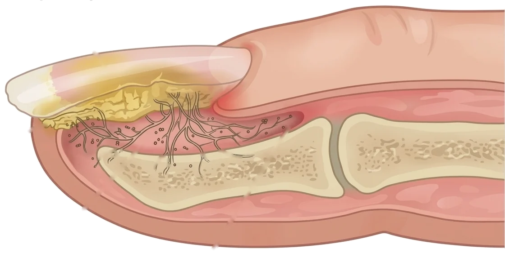
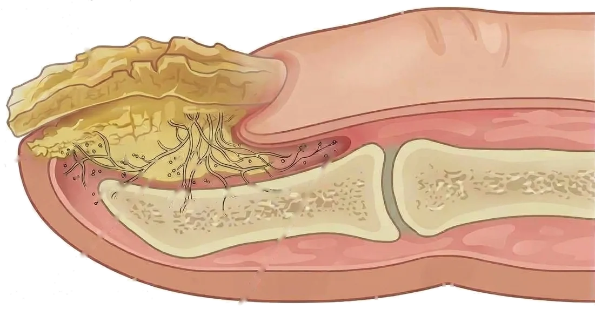
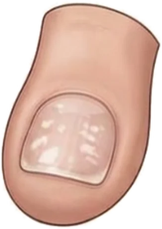
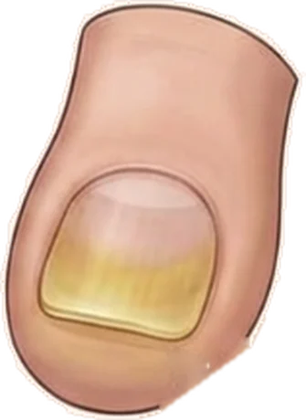
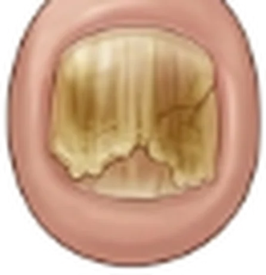
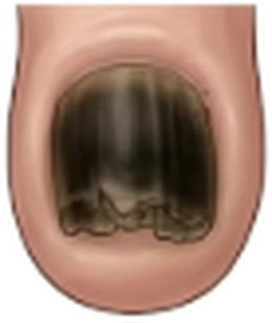
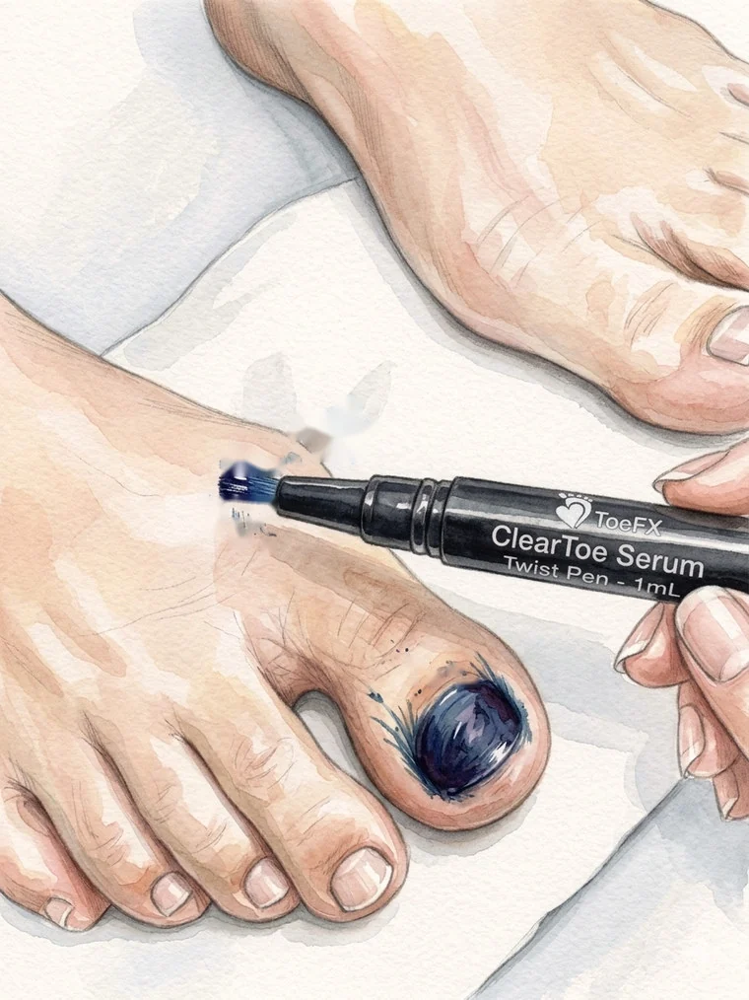
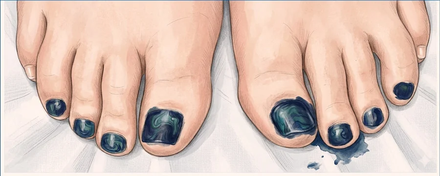
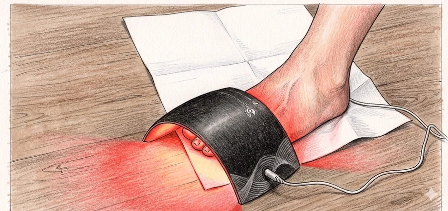

נעים מאוד, אני שרה בן אהרון, מטפלת בבעיות כף רגל בקליניקה שלי במושב רמת רזיאל, ומתמחה בפטרת הציפורן.
פטרת הציפורן היא פטרייה שחיה מתחת ללוחית הציפורן ולא עליה, ובגלל זה משחה או לק שנמרחים מלמעלה לא מגיעים אליה. היא עוברת מאדם לאדם במקומות רטובים ומשותפים, ומספיק לדרוך פעם אחת בלי כפכפים ליד הבריכה או במקלחת של חדר הכושר.

ציפורןזיהום פטרייתי התחלתיבסיס

עיבוי ציפורןזיהום פטרתבסיס
חתך של ציפורן נגועה בפטרת הציפורן
רקעאיזו פטרייה זו בעצם
הפטרייה שגורמת לפטרת בין האצבעות והפטרייה שיושבת בציפורן הן אותה משפחה של פטריות. זה לא צירוף מקרים, וזה משנה את כל הדרך שבה מטפלים.
ויש כאן טעות נפוצה מאוד: הרבה אנשים בטוחים שהעור בכף הרגל שלהם פשוט יבש ומתקלף, ומורחים קרם לחות חודשים שלמים, כשבפועל מדובר בפטרת עור. אין בזה שום דבר מביך, השניים נראים כמעט אותו דבר, וההבדל ביניהם מתגלה בבדיקה.
היא מתחילה כמעט תמיד בעור, ורק אחר כך עולה לציפורןהפטרת שמתחילה בין האצבעות, מתקלפת ומגרדת, היא אותה פטרייה שבהמשך נכנסת מתחת לציפורן דרך פגיעה קטנה בקצה שלה.
וברגע שהיא בציפורן, הציפורן הופכת למאגר שלהשם היא מוגנת מתחת לגג הקשיח, וממשיכה להדביק את העור שמסביב שוב ושוב. זו בדיוק הסיבה שטיפול בעור לבדו לא מספיק, ושהפטרת חוזרת אצל אנשים שכבר טיפלו בה.
ולכן אני תמיד מסתכלת גם על העור וגם על הציפורנייםגם כשמגיעים אליי בגלל ציפורן אחת בלבד. אם העור בין האצבעות מתקלף, אין טעם לטפל רק בציפורן, ובדיוק להפך.
זיהויארבעת המצבים של פטרת הציפורן
אלה ארבעת המצבים שאני רואה בקליניקה, מהקל אל הקשה. רוב האנשים מזהים את עצמם באחד מהם מיד. מגיעים אליי בכל אחד מהמצבים האלה, ואף אחד מהם לא מביך אותי.

פטרת שטחית לבנהכתמים לבנים גיריים קטנים על פני הציפורן

פטרת דיסטלית תת-ציפורניתהצהבה ועיבוי קל שמתחילים בקצה הציפורן

פטרת דיסטרופית מתקדמתרוב הציפורן נהרסת ונשארת ממנה רק שארית

פטרת כרונית עם זיהום משניהציפורן שחורה, מעוותת ומפוררת
פטרת עוברת מאדם לאדם. היא חיה על רצפות רטובות ובכלים משותפים, ומספיק לדרוך עליה פעם אחת. אלה הדברים שאני מבקשת מכל מי שמגיע אליי, וגם ממי שעוד לא נדבק.
לנעול כפכפים בים ובבריכה, כי שם נדבקים מאדם אחרהרצפה סביב הבריכה, המלתחה והמקלחת הן משטח רטוב ומשותף, והפטרייה שורדת עליו זמן רב. הכפכפים מונעים את המגע הישיר, והם ההגנה הפשוטה והזולה ביותר שקיימת.
לנעול כפכפים גם במקלחות ציבוריות ובחדר הכושרמלתחה של חדר כושר, מקלחת במלון, מקלחת בקמפינג או במחנה. בכל מקלחת שאנשים אחרים דורכים בה יחפים, נכנסים עם כפכפים ולא ברגל חשופה.
לבחור גרביים מחומר נושם, כמו כותנה, במבוק או פשתןחומר שנושם מוציא את הלחות מהרגל במקום לכלוא אותה בפנים. לחות שנשארת סגורה בתוך הנעל כל היום היא בדיוק מה שהפטרייה צריכה.
לשים לב לגודל, גם של הנעליים וגם של הגרבייםגרב קטנה מדי לאורך זמן לוחצת על כף הרגל ועל הציפורניים, וכך גם נעל קצרה מדי או מחודדת בקצה. הלחץ הקבוע פוגע בציפורן, ודרך הפגיעה הזאת הפטרייה נכנסת. נעליים נוחות הן חלק מהמניעה.
כשחוזרים הביתה מהעבודה, להוריד נעליים וגרביים ולתת לרגליים להתאוורריום שלם בתוך נעל סגורה יוצר בדיוק את התנאים שהפטרייה אוהבת, חום ולחות. אוויר יבש הוא מה שהיא לא אוהבת, ולכן שווה להוריד את הנעליים כבר בכניסה לבית ולא רק לפני השינה.
להוציא את הרגליים לאוויר ולשמש לכמה דקות ביוםהפטרייה צריכה שלושה תנאים כדי להתפתח: חושך, לחות וחוסר אוויר. זה בדיוק מה שקורה בתוך נעל סגורה. אמבט שמש פשוט מייבש את הרגליים ולוקח ממנה את שלושת התנאים האלה. זה לא מחליף טיפול, וזה עוזר.
שלכל אחד בבית יהיה גוזרן ציפורניים משלוגוזרן אחד משותף לכל המשפחה הוא הטעות הנפוצה ביותר שאני פוגשת, וזו גם ההמלצה שהמחקרים מצאו כקשורה ביותר לחזרה של הפטרת. מספיק שאדם אחד בבית נדבק, וכל מי שמשתמש בגוזרן אחריו חשוף. גם מגבת רגליים היא פריט אישי.
ובצד השנימה לא נכון לעשות
לא לשייף את הציפורן לבד בביתבזמן השיוף האבק של ציפורן עם פטרת עף באוויר ומתיישב מסביב. בקליניקה אני עובדת עם מגן פנים, עם מכונה שיש בה שואב מובנה ועם מגש גדול שתופס הכל, ובבית אין את זה.
לא לכסות את הציפורן בלקהלק מסתיר את המראה, והפטרייה ממשיכה לעבוד מתחתיו בלי שרואים מה קורה. אני לא עובדת עם לק בכלל, ולא ממליצה עליו בתקופה הזאת.
לא להשתמש בגוזרן של מישהו אחר, וגם לא להשאיל את שלךהכלי הוא הדרך המהירה ביותר להעביר את זה בין בני משפחה. ולמי שכבר נדבק, כדאי גוזרן נפרד לציפורן הפגועה.
לא לחכות ולראות אם זה יעבור מעצמוהפטרייה מוגנת מתחת לציפורן. כשמתחילים מוקדם הדרך בדרך כלל קצרה יותר, ולכן גם ציפורן אחת שהצהיבה שווה מבט.
לפעמים הפטרת חוזרת דווקא אצל מי שעושה הכל נכון, והסיבה לא יושבת בציפורן עצמה אלא בצורה של כף הרגל ובנעל שהיא נכנסת אליה.
אלוקס ולגוס, עיוות העצםהבוהן נוטה לכיוון שאר האצבעות, והעצם בבסיס שלה בולטת החוצה. הלחץ של הנעל על הבליטה הזאת פוגע בציפורן
אצבע פטישאצבע שמתכופפת במפרק ונשארת כפופה. הפרק הבולט מקבל את החיכוך מהנעל, והציפורן שמתחתיו נלחצת בכל צעד
עיוות בכף הרגל לוחץ על הציפורן בלי שמרגישים בזהאלוקס ולגוס, הבליטה שנוצרת בבסיס הבוהן, ואצבע פטיש, אצבע שמתכופפת ונשארת כפופה, משנים את הדרך שבה האצבעות יושבות בתוך הנעל. הלחץ הקבוע פוגע בציפורן, ודרך הפגיעה הזאת הפטרייה נכנסת.
ולכן אני מודדת את הנעליים ואת הגרביים בקליניקהכשפטרת חוזרת שוב ושוב, אני מבקשת לראות את הנעליים ואת הגרביים שהולכים בהם יום יום. הרבה פעמים מקור הבעיה נמצא שם, ולא בציפורן עצמה.
הפתרוןאיך נראה טיפול פוטותרפיה אצלי
זה הטיפול שאני עושה לפטרת הציפורן, והוא מגיע אל הפטרייה בדיוק במקום שבו היא יושבת. אז נעבור על זה יחד, שלב אחרי שלב, בדיוק כמו שזה קורה.
כשמגיעים
את/ה מגיע/ה אליי לקליניקה שבמושב, לטיפול שנמשך כשעה וחצי. יושבים על כיסא נוח. אפשר גם קפה או תה.
הציפורניים
אני מתחילה בציפורניים. מדקקת את הציפורן בעדינות, שכבה אחרי שכבה, עד שאני מגיעה אל הפטרייה שיושבת מתחתיה. זו ההכנה, וזה כל ההבדל בין טיפול שעובד לטיפול שלא.
כף הרגל
אחר כך אני עוברת על כל כף הרגל ובודקת אותה, כולל העור שבין האצבעות, כי משם זה בדרך כלל התחיל. אני גם מסתכלת על מבנה כף הרגל, ואם צריך אני אומרת לך מה כדאי לעשות בהמשך.
הפוטותרפיה
ואז מגיע החלק היפה. אני מורחת את הסרום הכחול, ומכניסה את כל כף הרגל לתוך מכונת הפוטותרפיה. את החלק הזה כמעט אף אחד לא מרגיש. זה פשוט זמן שלך לנוח, והרבה אנשים נרדמים לי בדיוק שם.
המכשיר והסרום שאני עובדת איתם

ככה אני מורחת אותו, ציפורן אחרי ציפורן

הסרום הכחול, אחרי המריחה

וכף הרגל נכנסת פנימה, לזמן שכולו שלך
בסיום הטיפול את/ה מקבל/ת ממני הנחיות מסודרות להמשך. תדירות
הטיפולים נקבעת לפי ההתקדמות, לפי הקצב שבו הפטרייה מתייבשת, ואצל כל
אחד התהליך נראה אחרת. הטיפול השני הוא תמיד אחרי שבועיים, ומהשלישי
ואילך קובעים לפי מה שרואים בפועל.
וחשוב לי להגיד את זה בכנות: זה תהליך, ולא קסם. מול פטרייה עיקשת מה שעושה את העבודה הוא שילוב של שניים, הטיפול כאן והחזרתיות על הפעולות הנכונות בבית. את החלק השני אני לא יכולה לעשות במקומך, ובשבילו כתבתי את החלק הבא.
כדי להמשיך את הטיפול שקיבלת כאן, יש כמה דברים קטנים שעושים בבית. הם לוקחים דקה ביום, והם אלה שמחזיקים את מה שהשגנו יחד בין טיפול לטיפול.
למרוח את הסרום בוקר וערבבטיפול הראשון מקבלים ממני במתנה בקבוק סרום מהמוצרים שאני מכינה בעצמי. אני ממליצה בבוקר לפני הנעליים, ובערב מיד אחרי המקלחת כשהרגליים נקיות ויבשות. ככה הכי קל לזכור, ותוך שבוע זה כבר הופך להרגל. הבקבוק הראשון הוא ממני, וכל בקבוק נוסף אחריו נרכש בנפרד ואינו חלק מהטיפול.
להמשיך לנעול כפכפים בים, בבריכה ובמקלחותהעובדה שהתחלנו לטפל לא מורידה את האפשרות להידבק שוב. הכפכפים נשארים בתיק.
להמשיך לאוורר את הרגליים כל יוםאותו הרגל בדיוק כמו קודם, גם עכשיו. נעליים וגרביים יורדות כשנכנסים הביתה.
לשמור על כלים אישיים, וגם על מגבת נפרדתגוזרן משלך בלבד, ומגבת רגליים שלא עוברת בין בני הבית. אחרת מה שטיפלנו בו חוזר מהכיוון השני.
כל הציוד שלי עובר חיטוי ועיקור מלא, ואני מראה את המעטפה הסגורה לפני שאני פותחת אותה. מגבות חדשות לכל אדם, כפפות חדשות, וחיטוי של כל העמדה ושל הכיסא בין אחד לשני.
את עובדת עם סכין?
לא. הכלים שלי הם ראש שיוף, ניפר ומנורת הגדלה. הסכין שאנשים מפחדים ממנו, זה שמגלחים איתו עור, לא קיים אצלי בכלל. וגם אבק השיוף לא מתפזר, כי למכונה שלי יש שואב מובנה ומתחת לכף הרגל יש מגש גדול שתופס הכל.
וזה כואב?
אני לא מבטיחה שלא כואב, כי זה לא יהיה נכון. יש מי שזה מדגדג אותו, יש מי שנעים לו, ויש מי שרגיש יותר ואז אני עובדת לאט יותר. אני שואלת כל הזמן אם הכל בסדר, ואם אני מרגישה שכואב אני מורידה הילוך. אני פשוט לא שוכחת שיש בן אדם מאחורי הרגל.
כמה טיפולים אני צריך?
מתחילים בטיפול אחד, ואחרי שבועיים נפגשים שוב ומסתכלים יחד איך הציפורן הגיבה. משם ממשיכים לפי מה שהרגל שלך צריכה. אני לא עובדת לפי פרוטוקול קבוע ולא נוקבת במספר טיפולים, כי כל אדם מגיב אחרת. אני עושה פר בן אדם, ואת ההחלטה הבאה מקבלים יחד אחרי שראינו מה קרה.
חשוב לדעתמתי לא לחכות ולהגיע
כשיש אודם, נפיחות או הפרשה סביב הציפורןהאזור כבר מגורה, וזה המצב שבו לא כדאי לחכות שיחמיר מעצמו.
כשכואב בהליכה או בתוך הנעלציפורן שהתעבתה לוחצת בנעל, וכשכל צעד מזכיר שהיא שם, זה הזמן לבוא.
כשהציפורן מתרוממת, משנה צורה או מתפוררתשינוי במבנה הציפורן שווה מבט גם כשהוא לא כואב, כי דווקא אז קל יותר לטפל.
ותמיד, כשיש סוכרת או בעיה בזרימת הדםבמצב הזה לא מנסים שום דבר לבד, ולא משנה כמה זה נראה קטן. מגיעים, אני אסתכל, ובמקרה הצורך אפנה לרופא. אצלי הכלל הוא שכשיש ספק, אין ספק.

 אלוקס ולגוס, עיוות העצם
אלוקס ולגוס, עיוות העצם
 אצבע פטיש
אצבע פטיש